SART
The US FCC has recently approved transmissions by AIS SART devices. These devices were originally designed for SOLAS class ships as an alternative to radar SARTs for carriage on life boats, but the efficiency of design has encouraged applications down to man-over-board devices.
Search And Rescue Transponders (SART) or PLB transmitting AIS messages are now available on the market. In an emergency situation the position will be displayed as an AIS target in OpenCPN. AIS SART can be a device on a vessel, in a life raft or a personal Man Over Board (MOB) device. MMSI always begins with 97.
Any AIS SART Activation
Note: Unknown SART. When the MMSI Number is not entered into the MMSI List
This section includes “Unknown” SART, SART Alerts which Do NOT have MMSI numbers entered into the MMSI List as MOB. Listed MMSI SART Alerts also have this type of alert. The common notice or alert is that the icon below marks an emergency.
SART icon, distress target display. This is a “Mayday”.
In OpenCPN a distress signal sent by a SART, triggers a visual alert (red explosion bubble) and a warning sound (if activated in the ToolBox–>AIS Tab).
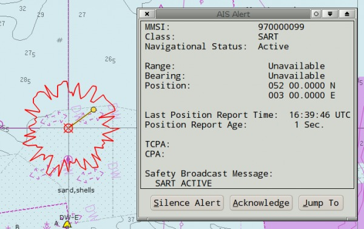
Jump to Target
Then Manually Create & Activate Route.
There is no Automatic creation of a Route to the SART for MMSI numbers not entered into the MMSI List.
Currently the easiest way to create a Route from Ship to SART is to pick Jump to Target from Target Info and then Right Click on the SART Alert Icon and pick Navigate to this which will create and set the Route Active.
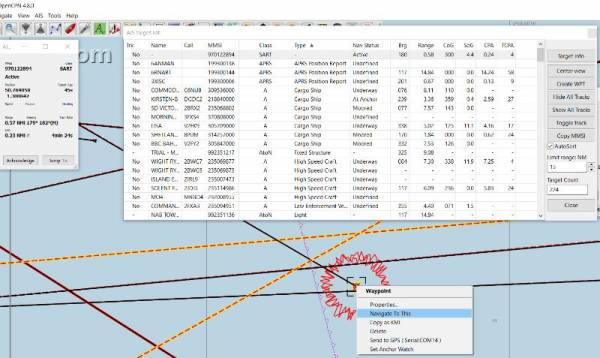
We would like to see “Navigate to this” as a Right Click in the AIS Target List.
Alert is Acknowledged
Once the alert is Acknowledged, the target behaves as any other AIS target. In the picture below the cursor is over the target. The SART target will persist on screen for 18 minutes after the last transmission irrespective of other settings for AIS. SART alerts always have priority over DSC and CPA alerts.
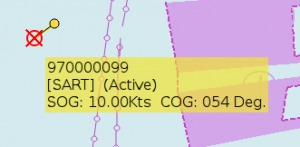
And here is an AIS target query.
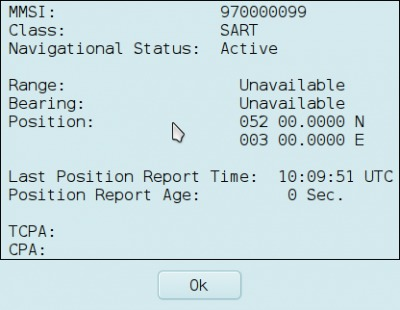
AIS SART messages and DSC distress calls are always found at the top of the AIS target list.

Automatic SART-MOB Activation for your Crew
Note: Enter Crew Member AIS-SART-PLB MMSI Numbers into the MMSI List
If you and your crew have AIS Sart PLB personal locator beacons, transmitting AIS emergency messages, and the MMSI number of each device is entered in Options→Ships→MMSI Properties→New, OpenCPN (from version 4.0) will automatically work as a man overboard tracking device.
Read more in Man OverBoard.
In particular, each Crew Member's MMSI must be properly recorded and set up for "Automatic MOB Activation" in Options > Charts > Ship > MMSI list.
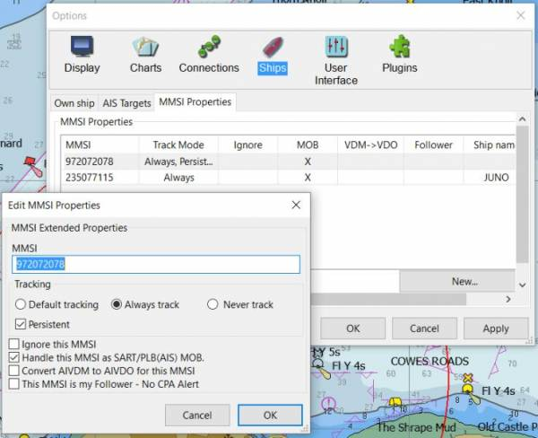
AIS Sart for MMSI Crew "Temporary MOB Route" Shows
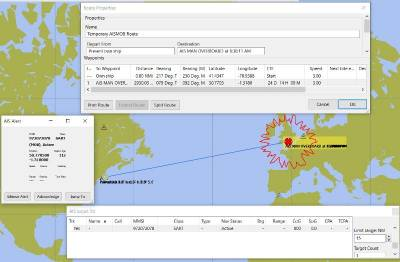
When the AIS-Sart occurs and becomes “Active” (showing up at the top of the AIS Target List), there is a new heavy blue “Temporary MOB Route” created from the Ship to the SART, that is not “Activated” yet. Also the Active SART has a red explosion bubble around it and the heavy blue “temporary MOB route” is automatically inserted into the Route Manager along with a MOB waypoint.
AIS Sart "Temporary MOB Route" is Activated
When the automatically created “Temporary MOB Route” (shown as a heavy blue line), is activated by a Right Click, or in Route Manager, the “Active Route Console” Window appears on the right side of the screen and the route is from Ship to MOB.
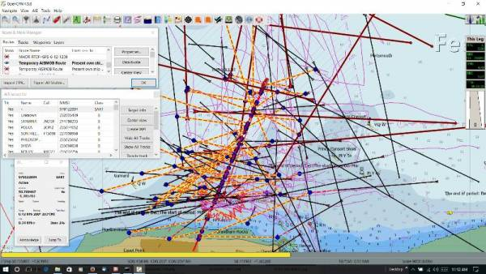
This is an intense situation with heavy AIS traffic, shown with normal AIS settings. There are ways to reduce the clutter:
From from Menubar > AIS > Dropdown
- Turn on “Attenuate less critical targets”
- Uncheck “Show AIS Target Tracks”
- Uncheck “Show CPA Alert Dialogues”
From Options > Ships > AIS Targets
- Under “Display” Uncheck “Show Target COG predictor arrow”
- Under “CPA Calculation” to Uncheck “Warn if CPA is less than (NMi)”
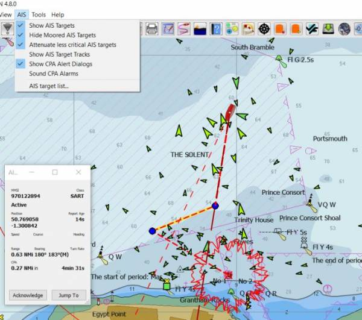
The final step, “Show Targets” set to Off from Menubar > AIS > Show Targets:
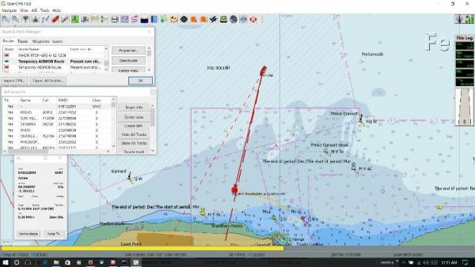
After MMSI Crew member SART is deactivated
After any Crew member SART MOB (MMSI entered into MMSI List) has occurred and is completed, there is an 18 minute period during which the MOB continues to show (typical). Then after that there will be continue to be artifacts left in the “Route Manager” which is very good, because they provide a backup to continue the search. Each screen shows a different artifact.
Temporary MOB Route
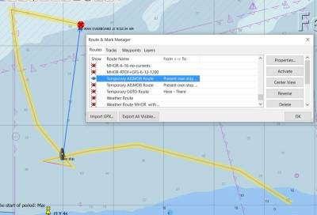
MOB Track
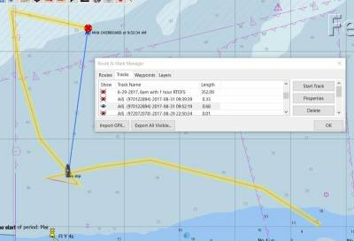
MOB Waypoints - Most recent MOB Waypoint (the earlier ones are disabled automatically).
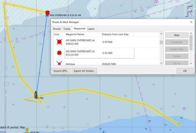
Disable or ignore a SART Alarm
When Alert is active, find the Alert's MMSI number in the AIS Target List. Then Add a “New” MMSI number in Options→Ships→MMSI. Then Edit the Options→Ships→MMSI Properties to “ignore” this target. Then close the Options Dialog. Then “Acknowledge” the SART alert one more time, and no further alerts will be seen. If you restart OCPN, you will never get alerts for this target again. To simulate a SART Alarm run this Sart Alarm Nmea File in VDR player.
Testing AIS-Sart-Mob without AIS-PLB Device (dry test using VDR files)
The two lines representing the SART going off are:
!AIVDM,1,1,,A,»O2TSdlt:1@E=@,2*51
!AIVDM,1,1,,A,1>O2TSf000OquoPM3AG000000000,2*3B
First set up the AIS-MOB MMSI in the Options > Ship > MMSI Tab as if it were a Crew Member's MOB device, as shown below:
- MMSI# 972072078
- Always Track
- Persistant
- Handle this MMSI as SART/PLB(AIS) MOB
Testing Ais-Sart-Mob with a Real SART event recording
Some of the screenshot illustrations above were done with this file.
For a discussion and testing of these features see Cruiser's Forum Thread AIS Man Overboard Behavior
Testing connection of a AIS-SART-MOB-PLB device in OpenCPN
It is possible to test a SART, to make sure it works. If the AIS-MOB-PLB has a testing function that can be activated, there is a test mode which uses a different icon. (We would very much like a VDR recording of this to provide an download dry test.)
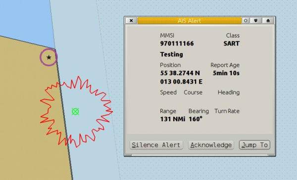
Icon displayed when testing an AIS-SART device.